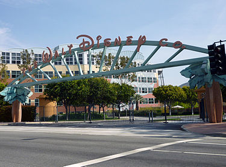

|  |
The Walt Disney Company, commonly known as Disney, is an American diversified:1 multinational mass media and entertainment conglomerate headquartered at the Walt Disney Studios in Burbank, California. It is the world's second largest media conglomerate in terms of revenue, after Comcast. Disney was founded on October 16, 1923, by Walt Disney and Roy O. Disney as the Disney Brothers Cartoon Studio, and established itself as a leader in the American animation industry before diversifying into live-action film production, television, and theme parks. The company also operated under the names The Walt Disney Studio, then Walt Disney Productions. Taking on its current name in 1986, it expanded its existing operations and also started divisions focused upon theater, radio, music, publishing, and online media. In addition, Disney has since created corporate divisions in order to market more mature content than is typically associated with its flagship family-oriented brands. The company is best known for the products of its film studio, The Walt Disney Studios, which is today one of the largest and best-known studios in American cinema. Disney also owns and operates the ABC broadcast television network; cable television networks such as Disney Channel, ESPN, A+E Networks, and ABC Family; publishing, merchandising, music, and theatre divisions; and owns and licenses 14 theme parks around the world. The company has been a component of the Dow Jones Industrial Average since May 6, 1991. An early and well-known cartoon creation of the company, Mickey Mouse, is a primary symbol of The Walt Disney Company. |